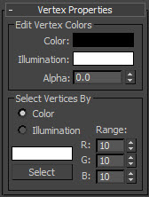
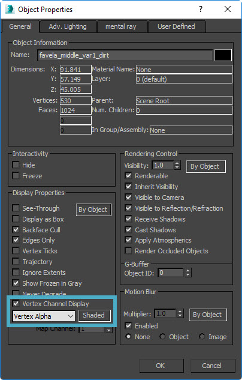
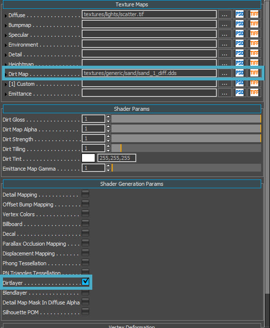
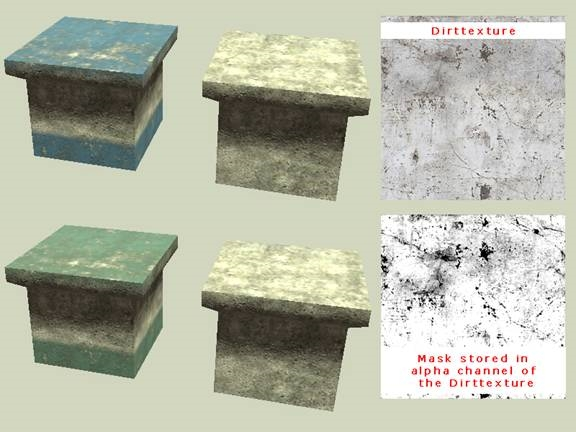
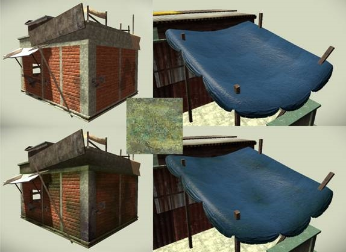
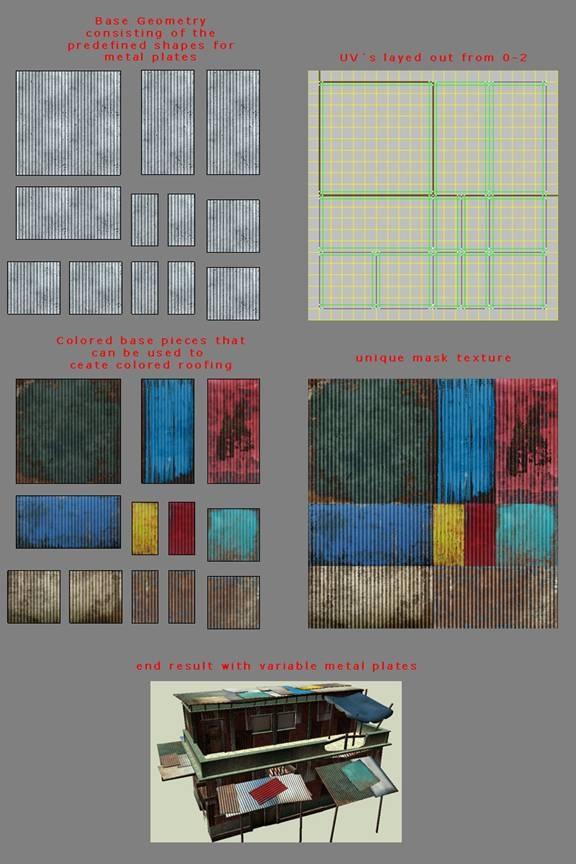
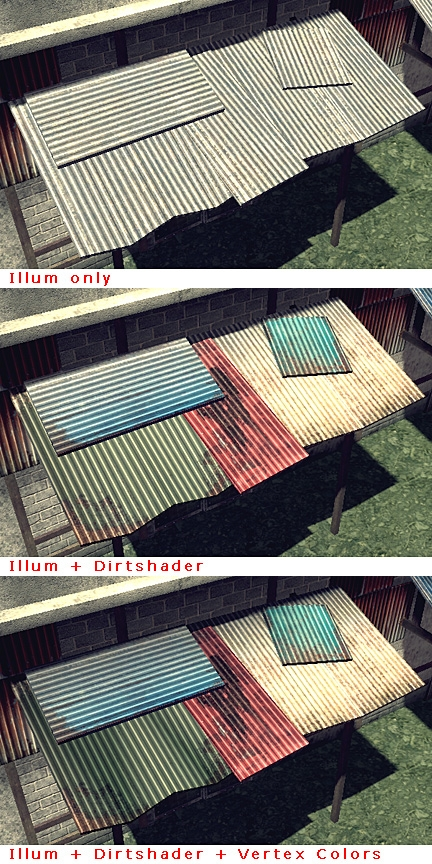
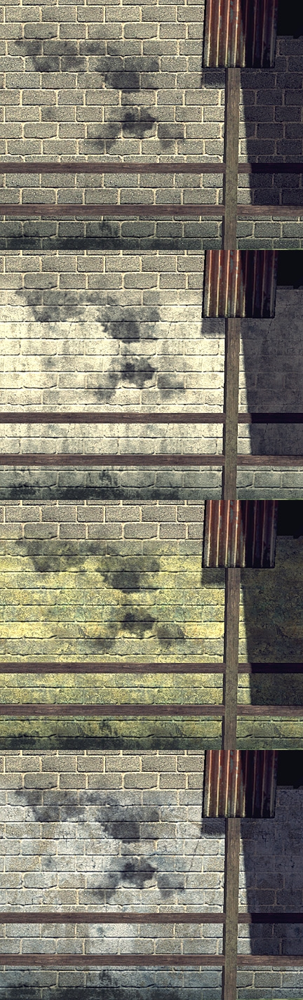

Функция Dirt Layer устарела в пользу улучшенного Blend Shader. Он будет удален в будущих версиях CRYENGINE.
Обратите внимание, что шейдер Blend может использовать как Vertex Alpha, так и специальную текстуру маски Blend, которая позволяет добиться гораздо более точного смешивания.
Обзор
Слой грязи позволяет вам смешать другую текстуру с базовым материалом за один вызов отрисовки без необходимости размещения дополнительной наклейки. Сама смешанная текстура поддерживает альфа-канал, а степень смешивания контролируется через альфу вершины в вашей сетке и атрибут шейдера. Кроме того, вы можете указать тайлинг и альфу для текстуры грязи. Поскольку текстура грязи использует те же UV-развертки, что и базовая диффузная текстура, вы можете противодействовать нежелательной мозаике с помощью параметра tiling.
Для получения дополнительной информации, пожалуйста, обратитесь к Освещенный шейдер для получения дополнительной информации.
Настройка в 3ds Max
Нанесение грязи на объект
Чтобы настроить актив, примените модификатор VertexPaint к вашей сетке и установите его канал на Vertex Alpha. Теперь вы можете закрасить участки, которые должны быть затронуты грязью. Черный цвет установит непрозрачность слоя грязи на 100% и сделает грязь полностью видимой, белый вообще не будет показывать грязь. Оттенки серого будут смешиваться между грязью и базовой диффузной текстурой. Вы также можете выбрать группу вершин и присвоить им введенное значение альфа вершины. Альфа-значение можно установить под Свойства вершин вкладка, когда в Режим выбора вершин.

Чтобы видеть в окне просмотра только вершину альфа, щелкните правой кнопкой мыши на вашем объекте проверьте Отображение вершинного каналаи установите его в Вертекс Альфа.

Настройка в XSI
XSI Рабочий процесс
- Смоделируйте и текстурируйте свой объект обычным способом, используя стандартные материалы и диффузную текстуру.
- Выберите свой объект и из Рендеринг панель инструментов выбрать Получить -> Свойство -> Цвет в Карта вершин.
- Перейти к Редактор свойств отображения камеры и установить Отображение свойств цвета вершин чтобы Показать Альфу.
- Пресса Ctrl+W открыть Свойства кисти редактор свойств и установите Режим цветного рисования чтобы Альфа.
- Чтобы установить Альфа значение, вы должны использовать Слайдер в ползунках RGBA элементов управления палитры.
- Там, где у вашего объекта прозрачные вершины, будет виден слой грязи.
- Экспортируйте свой объект в CRYENGINE.
- Настройте материалы слоя грязи в CRYENGINE.
Использование в CRYENGINE

Слой грязи в настоящее время работает только с шейдером Illum.
- Загрузите свою текстуру грязи в слот карты грязи шейдера.
- Установите флажок Dirtlayer в разделе «Параметры генерации шейдеров», чтобы включить параметры слоя Dirt.
Вы должны вручную настроить каждый слой грязи так, чтобы он соответствовал параметрам, которые вы использовали в слое Max DirectX Dirt:
- Грязевой блеск позволяет вам установить глянцевость текстуры грязи.
- Сила грязи позволяет вам установить общую непрозрачность вашей текстуры грязи.
- Грязевая черепица позволяет вам установить масштаб текстуры грязи.
- Грязевой оттенок позволяет вам тонировать текстуру. Установите белый цвет, чтобы не было тонирования.
Использование слоя грязи
Идея слоя грязи состоит в том, чтобы добавить детализацию объектам, не оказывая при этом серьезного влияния на производительность. Поскольку вы ограничены небольшими текстурами плитки и несколькими материалами, слой грязи позволяет вам добавлять визуальное разнообразие к объектам, не добавляя при этом слишком много новых текстур.
Используя вершинную альфу, вы гарантируете, что вы по-прежнему сможете использовать цвета вершин для добавления дополнительной информации о затенении к нашим сеткам.
Каждую текстуру грязи следует обрабатывать и повторно использовать на других ресурсах. Ваша цель должна состоять в том, чтобы создать библиотеку текстур, чтобы испачкать все базовые материалы.
Сколы краски
Вот мозаичная текстура бетона размером 256x256 в качестве основы. Сама текстура Dirt представляет собой белый бетонный материал с маской в альфа-канале для создания эффекта «сколов краски». Разрешение текстуры грязи — 512x512, чтобы маска оставалась четкой.
Используя белый цвет в качестве базового цвета, вы можете легко тонировать текстуру грязи с помощью атрибута оттенка в шейдере. Добавляя края и изменяя альфу вершин, вы можете указать, где вы хотите, чтобы ваша текстура была смешана.

Стены и другие объекты
Здесь вы можете увидеть, как можно использовать одну и ту же грязевую маску для загрязнения разных материалов.

Добавление вариаций к основным объектам
В некоторых случаях может быть полезно создать уникальную текстуру грязи, а не плитку.
Например, в следующих примерах много металлических досок, которые используются в качестве кровли зданий. Это означает, что эти объекты часто видны и должны быть визуально интересными. Для этого вам следует определить желаемую форму металлических досок.
Чтобы максимально эффективно использовать текстуры, убедитесь, что они используют доступное пространство UV в полной мере. После создания маски укажите, какие доски будут окрашены (и каким образом), и постройте объекты из заранее определенных частей.

Максимальное использование слоя грязи
Для начала используйте базовую текстуру плитки. Создайте интересную текстуру грязи, чтобы добавить разнообразия базовой текстуре. Используйте цвета вершин, чтобы добавить тонкие вариации цвета и базовую окклюзию окружающей среды. Обязательно используйте все эти три элемента, когда это возможно.

Повторное использование текстур грязи
Если у вас есть хорошая базовая текстура с сильной картой нормалей, стоит попробовать повторно использовать существующие текстуры/маски грязи в вашем материале, прежде чем создавать новую.
Часто желаемого эффекта можно добиться с помощью уже существующих текстур и функций тонирования в шейдере. Это экономит память текстур и время.
